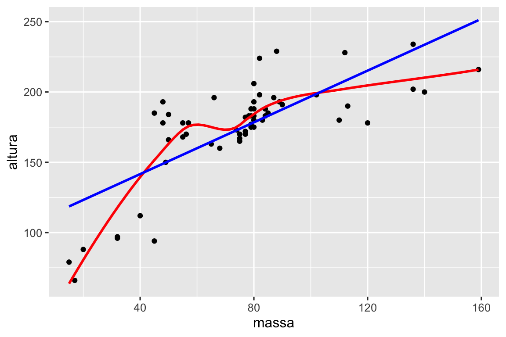
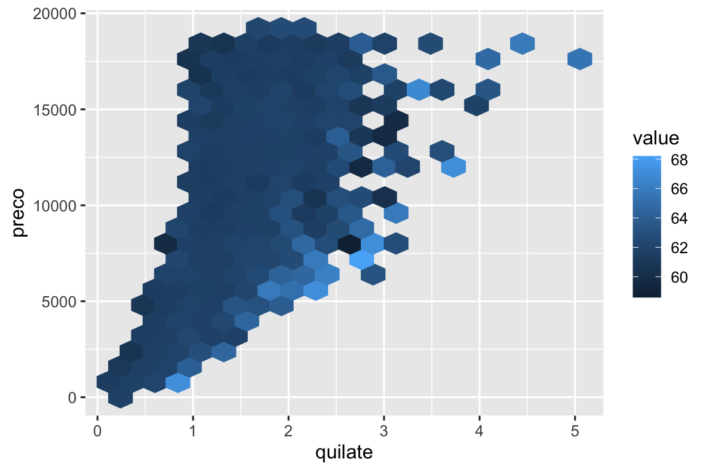
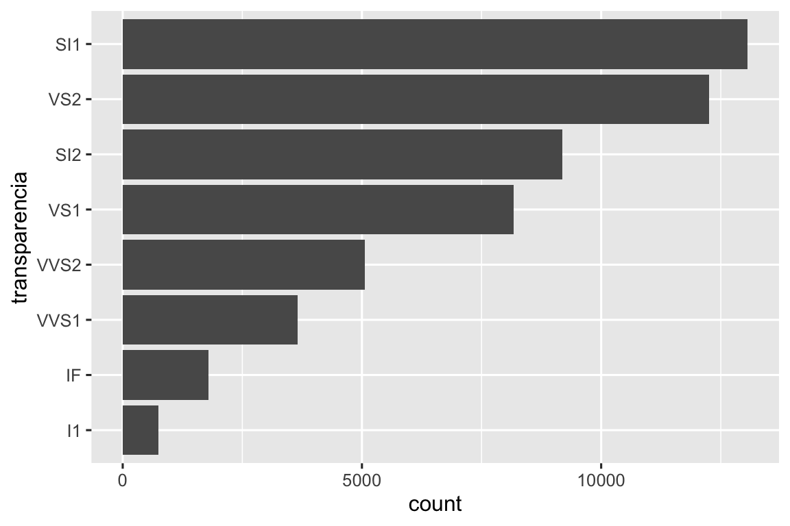
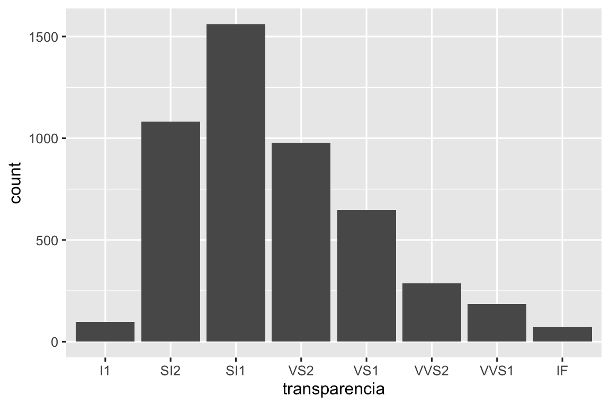
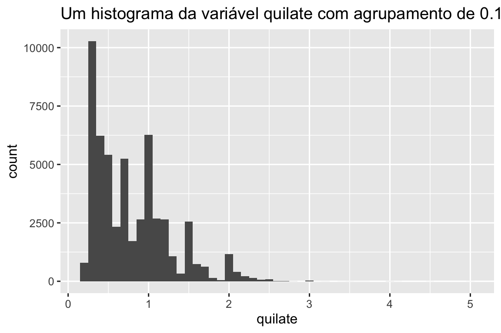

25 ✅ Funções
25.1 Introdução
Uma das melhores maneiras de melhorar sua atuação como cientista de dados é escrever funções. As funções permitem automatizar tarefas comuns de uma forma mais poderosa e geral do que copiar e colar o código. Escrever uma função tem quatro grandes vantagens em relação ao copiar e colar:
Você pode dar a uma função um nome evocativo que torne seu código mais fácil de entender.
À medida que os requisitos mudam, você só precisa atualizar o código em um local em vez de vários.
Você elimina a chance de cometer erros acidentais ao copiar e colar (ou seja, atualizar o nome de uma variável em um lugar, mas não em outro).
Torna mais fácil reutilizar o trabalho de um projeto em outro, aumentando sua produtividade ao longo do tempo.
Uma boa regra geral é considerar escrever uma função sempre que você copiar e colar um bloco de código mais de duas vezes (ou seja, quando você tiver três cópias do mesmo código). Neste capítulo, você aprenderá sobre três tipos úteis de funções:
- Funções vetoriais que recebem um ou mais vetores como entrada e retornam um vetor como saída.
- Funções de data frames que recebem um data frame como entrada e retornam um data frame como saída.
- Funções de plotagem que recebem um data frame como entrada e retornam um gráfico como saída.
Cada uma dessas seções inclui muitos exemplos para ajudá-lo a generalizar esses padrões que você vê. Esses exemplos não seriam possíveis sem a ajuda do pessoal do Twitter, e encorajamos você a seguir os links nos comentários para ver as inspirações originais. Você também pode querer ler os tweets motivacionais originais para funções gerais e funções de plotagem para ver ainda mais funções.
25.1.1 Pré-requisitos
Resumiremos uma variedade de funções do pacote tidyverse. Também usaremos o pacote dados como fonte de dados familiares para usar em nossas funções.
25.2 Funções vetoriais
Começaremos com funções vetoriais: funções que recebem um ou mais vetores e retornam um resultado vetorial. Por exemplo, dê uma olhada neste código. O que isso faz?
df <- tibble(
a = rnorm(5),
b = rnorm(5),
c = rnorm(5),
d = rnorm(5),
)
df |> mutate(
a = (a - min(a, na.rm = TRUE)) /
(max(a, na.rm = TRUE) - min(a, na.rm = TRUE)),
b = (b - min(b, na.rm = TRUE)) /
(max(b, na.rm = TRUE) - min(a, na.rm = TRUE)),
c = (c - min(c, na.rm = TRUE)) /
(max(c, na.rm = TRUE) - min(c, na.rm = TRUE)),
d = (d - min(d, na.rm = TRUE)) /
(max(d, na.rm = TRUE) - min(d, na.rm = TRUE)),
)
#> # A tibble: 5 × 4
#> a b c d
#> <dbl> <dbl> <dbl> <dbl>
#> 1 0.339 2.59 0.291 0
#> 2 0.880 0 0.611 0.557
#> 3 0 1.37 1 0.752
#> 4 0.795 1.37 0 1
#> 5 1 1.34 0.580 0.394Você pode adivinhar que isso redimensiona cada coluna para pertencer a um intervalo de 0 a 1. Mas você percebeu o erro? Quando Hadley escreveu este código, ele cometeu um erro ao copiar e colar e esqueceu de alterar um a para um b. Prevenir esse tipo de erro é um bom motivo para aprender a escrever funções.
25.2.1 Escrevendo funções
Para escrever uma função você precisa primeiro analisar seu código repetido para descobrir quais partes são constantes e quais partes variam. Se pegarmos o código acima e o extraimos da função mutate(), será um pouco mais fácil ver o padrão porque cada repetição agora é uma linha:
Para deixar isso um pouco mais claro, podemos substituir a parte que varia com █:
(█ - min(█, na.rm = TRUE)) / (max(█, na.rm = TRUE) - min(█, na.rm = TRUE))Para transformar isso em uma função você precisa de três coisas:
Um nome. Aqui usaremos
rescala01porque esta função redimensiona um vetor para ficar entre 0 e 1.Os argumentos. Os argumentos variam entre as chamadas e nossa análise acima nos diz que temos apenas um. Chamaremos de
xporque este é o nome convencional para um vetor numérico.O corpo. O corpo é o código repetido em todas as chamadas.
Então, você cria uma função seguindo o modelo:
nome <- function(argumentos) {
corpo
}Para este caso nos leva a:
Neste ponto você pode testar com algumas entradas simples para ter certeza de que capturou a lógica corretamente:
Então você pode reescrever a chamada para mutate() como:
df |> mutate(
a = rescala01(a),
b = rescala01(b),
c = rescala01(c),
d = rescala01(d),
)
#> # A tibble: 5 × 4
#> a b c d
#> <dbl> <dbl> <dbl> <dbl>
#> 1 0.339 1 0.291 0
#> 2 0.880 0 0.611 0.557
#> 3 0 0.530 1 0.752
#> 4 0.795 0.531 0 1
#> 5 1 0.518 0.580 0.394(No Capítulo 26, você aprenderá como usar across() para reduzir ainda mais a duplicação, então tudo que você precisará é df |> mutate(across(a:d, rescala01))).
25.2.2 Melhorando nossa função
Você pode notar que a função rescala01() faz algum trabalho desnecessário — em vez de calcular min() duas vezes e max() uma vez, poderíamos calcular o mínimo e o máximo em uma única etapa com range( ):
rescala01 <- function(x) {
intervalo <- range(x, na.rm = TRUE)
(x - intervalo[1]) / (intervalo[2] - intervalo[1])
}Ou você pode tentar esta função em um vetor que inclui um valor infinito:
x <- c(1:10, Inf)
rescala01(x)
#> [1] 0 0 0 0 0 0 0 0 0 0 NaNEsse resultado não é particularmente útil, então poderíamos pedir a função range() para ignorar valores infinitos:
rescala01 <- function(x) {
intervalo <- range(x, na.rm = TRUE, finite = TRUE)
(x - intervalo[1]) / (intervalo[2] - intervalo[1])
}
rescala01(x)
#> [1] 0.0000000 0.1111111 0.2222222 0.3333333 0.4444444 0.5555556 0.6666667
#> [8] 0.7777778 0.8888889 1.0000000 InfEssas mudanças ilustram um benefício importante das funções: como movemos o código repetido para uma função, precisamos fazer a mudança em um só lugar.
25.2.3 Funções de mutate
Agora que você tem a ideia básica de funções, vamos dar uma olhada em vários exemplos. Começaremos examinando as funções de “mutate”, ou seja, funções que funcionam bem dentro de mutate() e filter() porque retornam uma saída do mesmo comprimento que a entrada.
Vamos começar com uma variação simples de rescala01(). Talvez você queira calcular o z-score, redimensionando um vetor para ter uma média de zero e um desvio-padrão de um:
Ou talvez você queira encerrar um case_when() simples e dar a ele um nome útil. Por exemplo, esta função ajusta_mm() garante que todos os valores de um vetor estejam entre um mínimo ou um máximo:
ajusta_mm <- function(x, min, max) {
case_when(
x < min ~ min,
x > max ~ max,
.default = x
)
}
ajusta_mm(1:10, min = 3, max = 7)
#> [1] 3 3 3 4 5 6 7 7 7 7É claro que as funções não precisam trabalhar apenas com variáveis numéricas. Você pode querer fazer alguma manipulação repetida de strings. Talvez você precise deixar o primeiro caractere maiúsculo:
prim_maiusculo <- function(x) {
str_sub(x, 1, 1) <- str_to_upper(str_sub(x, 1, 1))
x
}
prim_maiusculo("hello")
#> [1] "Hello"Ou talvez você queira retirar sinais de porcentagem, vírgulas e cifrões de uma string antes de convertê-la em um número:
# https://twitter.com/NVlabormarket/status/1571939851922198530
limpa_numero <- function(x) {
tem_pct <- str_detect(x, "%")
num <- x |>
str_remove_all("%") |>
str_remove_all(",") |>
str_remove_all(fixed("$")) |>
as.numeric()
if_else(tem_pct, num / 100, num)
}
limpa_numero("$12,300")
#> [1] 12300
limpa_numero("45%")
#> [1] 0.45Às vezes, suas funções serão altamente especializadas para uma etapa de análise de dados. Por exemplo, se você tiver um monte de variáveis que registram valores ausentes como 997, 998 ou 999, você pode querer escrever uma função para substituí-los por NA:
Nós nos concentramos em exemplos que usam um único vetor porque achamos que são os mais comuns. Mas não há razão para que sua função não possa receber múltiplas vetores na entrada.
25.2.4 Funções de resumo
Outra família importante de funções vetoriais são as funções de sumarização, funções que retornam um único valor para uso em summarize(). Às vezes, isso pode ser apenas uma questão de definir um ou dois argumentos padrão:
virgulas <- function(x) {
str_flatten(x, collapse = ", ", last = " e ")
}
virgulas(c("gato", "cachorro", "pomba"))
#> [1] "gato, cachorro e pomba"Ou você pode fazer um cálculo simples, como o do coeficiente de variação, que divide o desvio padrão pela média:
Ou talvez você apenas queira tornar um padrão comum mais fácil de lembrar, dando-lhe um nome mais significativo:
Você também pode escrever funções com múltiplos vetores na entrada. Por exemplo, talvez você queira calcular o erro percentual absoluto médio para ajudá-lo a comparar as previsões do modelo com os valores reais:
Depois de começar a escrever funções, existem dois atalhos do RStudio que são muito úteis:
Para encontrar a definição de uma função que você escreveu, coloque o cursor sobre o nome da função e pressione
F2.Para pular rapidamente para uma função, pressione
Ctrl + .para abrir o arquivo difuso e o localizador de função e digite as primeiras letras do nome da função. Você também pode navegar para arquivos, seções do Quarto e muito mais, tornando-o uma ferramenta de navegação muito útil.
25.2.5 Exercícios
-
Pratique transformar os seguintes trechos de código em funções. Pense no que cada função faz. Como você chamaria cada função? Quantos argumentos são necessários?
Na segunda variante de
rescala01(), valores infinitos permanecem inalterados. Você pode reescreverrescale01()para que-Infseja mapeado para 0 eInfseja mapeado para 1?Dado um vetor de datas de nascimento, escreva uma função para calcular a idade em anos.
Escreva suas próprias funções para calcular a variância e a assimetria de um vetor numérico. Você pode procurar as definições na Wikipedia ou em outro lugar.
Escreva
ambos_na(), uma função de resumo que pega dois vetores do mesmo comprimento e retorna o número de posições que possuem umNAem ambos os vetores.-
Leia a documentação para descobrir o que as funções a seguir fazem. Por que elas são úteis mesmo sendo tão pequenas?
is_directory <- function(x) { file.info(x)$isdir } is_readable <- function(x) { file.access(x, 4) == 0 }
25.3 Funções de data frame
Funções vetoriais são úteis para extrair código repetido em um verbo dplyr. Mas muitas vezes você também repetirá os próprios verbos, especialmente em um pipeline grande. Ao perceber que você está copiando e colando vários verbos dplyr diversas vezes, você pode pensar em escrever uma função de data frame. As funções de data frame funcionam como verbos dplyr: elas pegam um data frame como primeiro argumento, alguns argumentos extras que dizem o que fazer com ele e retornam um data frame ou um vetor.
Para permitir que você escreva uma função que use verbos dplyr, primeiro apresentaremos o desafio da indireção (indirection challenge) e como você pode superá-lo usando os sinais de chaves (embracing) { }. Com essa teoria em mãos, mostraremos vários exemplos para ilustrar o que você pode fazer com ela.
25.3.1 Indireção e avaliação organizada
Quando você começa a escrever funções que usam verbos dplyr, você rapidamente se depara com o problema da indireção. Vamos ilustrar o problema com uma função muito simples: media_agrupada(). O objetivo desta função é calcular a média de var_media agrupada por var_grupo:
Se tentarmos usá-la, receberemos um erro:
diamante |> media_agrupada(corte, quilate)
#> Error in `group_by()`:
#> ! Must group by variables found in `.data`.
#> ✖ Column `var_grupo` is not found.Para tornar o problema um pouco mais claro, podemos usar um data frame mais simples de exemplo:
df <- tibble(
var_media = 1,
var_grupo = "g",
grupo = 1,
x = 10,
y = 100
)
df |> media_agrupada(grupo, x)
#> # A tibble: 1 × 2
#> var_grupo `mean(var_media)`
#> <chr> <dbl>
#> 1 g 1
df |> media_agrupada(grupo, y)
#> # A tibble: 1 × 2
#> var_grupo `mean(var_media)`
#> <chr> <dbl>
#> 1 g 1Independentemente de como chamamos media_agrupada() ele sempre faz df |> group_by(var_grupo) |> summary(mean(var_media)), em vez de df |> group_by(grupo) |> summary(mean(x) ) ou df |> group_by(grupo) |> summary(mean(y)). Este é um problema de indireção (indirection) e surge porque o dplyr usa avaliação organizada (tidy evaluation) para permitir que você se refira aos nomes das variáveis dentro do seu data frame sem qualquer tratamento especial.
A avaliação organizada (tidy evaluation) é ótima 95% das vezes porque torna suas análises de dados muito concisas, já que você nunca precisa dizer de qual data frame vem uma variável; é óbvio pelo contexto. A desvantagem da avaliação organizada surge quando queremos agrupar códigos repetidos do tidyverse em uma função. Aqui precisamos de alguma maneira de dizer a group_by() e summarize() para não tratar group_var e mean_var como o nome das variáveis, mas em vez disso procurar dentro delas a variável que realmente queremos usar.
A avaliação organizada inclui uma solução para esse problema chamada abraçar (embracing) 🤗. Abraçar (embracing) uma variável significa envolvê-la entre chaves para que (por exemplo) var se torne { var }. Abraçar uma variável diz ao dplyr para usar o valor armazenado dentro do argumento, não o argumento como o nome literal da variável. Uma maneira de lembrar o que está acontecendo é pensar em { } como olhar para dentro de um túnel — { var } fará uma função dplyr olhar dentro de var em vez de procurar por uma variável chamada var.
Então, para media_agrupada() funcionar, precisamos abraçar var_grupo e var_media com { }:
Sucesso!
25.3.2 Quando abraçar?
Portanto, o principal desafio ao escrever funções de data frame é descobrir quais argumentos precisam ser abraçados (embraced). Felizmente, isso é fácil porque você pode consultar a documentação 😄. Existem dois termos a serem procurados nos documentos que correspondem aos dois subtipos mais comuns de avaliação organizada (tidy evaluation):
Mascaramento de dados (data-masking): é usado em funções como
arrange(),filter()esummarize()que fazem calculos com variáveis.Selecionamento organizado (tidy-selection): é usado para funções como
select(),relocate()erename()que selecionam variáveis.
Sua intuição sobre quais argumentos usam avaliação organizada (tidy evaluation) deve ser boa para muitas funções comuns — basta pensar se você pode calcular (por exemplo, x + 1) ou selecionar (por exemplo, a:x).
Nas seções a seguir, exploraremos os tipos de funções úteis que você pode escrever depois de entender como abraçar (embracing) uma variável.
25.3.3 Casos de uso mais comuns
Se você normalmente executa o mesmo conjunto de sumarização ao fazer a exploração inicial de dados, considere agrupá-los em uma função auxiliar:
sumario6 <- function(data, var) {
data |> summarize(
min = min({{ var }}, na.rm = TRUE),
media = mean({{ var }}, na.rm = TRUE),
mediana = median({{ var }}, na.rm = TRUE),
max = max({{ var }}, na.rm = TRUE),
n = n(),
n_faltantes = sum(is.na({{ var }})),
.groups = "drop"
)
}
diamante |> sumario6(quilate)
#> # A tibble: 1 × 6
#> min media mediana max n n_faltantes
#> <dbl> <dbl> <dbl> <dbl> <int> <int>
#> 1 0.2 0.798 0.7 5.01 53940 0(Sempre que você usa summarize() em uma função auxiliar, achamos que é uma boa prática definir .groups = "drop" para evitar a mensagem de aviso e deixar os dados em um estado desagrupado.)
O bom dessa função é que, como ela usa summarize(), você pode usá-la em dados agrupados:
diamante |>
group_by(corte) |>
sumario6(quilate)
#> # A tibble: 5 × 7
#> corte min media mediana max n n_faltantes
#> <ord> <dbl> <dbl> <dbl> <dbl> <int> <int>
#> 1 Justo 0.22 1.05 1 5.01 1610 0
#> 2 Bom 0.23 0.849 0.82 3.01 4906 0
#> 3 Muito Bom 0.2 0.806 0.71 4 12082 0
#> 4 Premium 0.2 0.892 0.86 4.01 13791 0
#> 5 Ideal 0.2 0.703 0.54 3.5 21551 0Além disso, uma vez que os argumentos da summarize() usam mascaramento de dados (data-masking), isso significa que o argumento var para a função sumario6() também usa mascaramento de dados (data-masking). Isso significa que você também pode sumarizar variáveis calculadas:
diamante |>
group_by(corte) |>
sumario6(log10(quilate))
#> # A tibble: 5 × 7
#> corte min media mediana max n n_faltantes
#> <ord> <dbl> <dbl> <dbl> <dbl> <int> <int>
#> 1 Justo -0.658 -0.0273 0 0.700 1610 0
#> 2 Bom -0.638 -0.133 -0.0862 0.479 4906 0
#> 3 Muito Bom -0.699 -0.164 -0.149 0.602 12082 0
#> 4 Premium -0.699 -0.125 -0.0655 0.603 13791 0
#> 5 Ideal -0.699 -0.225 -0.268 0.544 21551 0Para resumir múltiplas variáveis, você precisará esperar até Seção 26.2, onde aprenderá como usar across().
Outra função auxiliar usando summarize() popular é uma versão de count() que também calcula proporções:
# https://twitter.com/Diabb6/status/1571635146658402309
conta_prop <- function(df, var, ordenar = FALSE) {
df |>
count({{ var }}, sort = ordenar) |>
mutate(prop = n / sum(n))
}
diamante |> conta_prop(transparencia)
#> # A tibble: 8 × 3
#> transparencia n prop
#> <ord> <int> <dbl>
#> 1 I1 741 0.0137
#> 2 SI2 9194 0.170
#> 3 SI1 13065 0.242
#> 4 VS2 12258 0.227
#> 5 VS1 8171 0.151
#> 6 VVS2 5066 0.0939
#> # ℹ 2 more rowsEsta função tem três argumentos: df, var e ordena, e apenas var precisa ser abraçada (embrancing) porque é passada para count() que usa mascaramento de dados (data-masking) para todas as variáveis. Observe que usamos um valor padrão para ordenar para que, se o usuário não fornecer seu próprio valor, o padrão seja FALSE.
Ou talvez você queira encontrar os valores exclusivos ordenados de uma variável para um subconjunto de dados. Em vez de fornecer uma variável e um valor para fazer a filtragem, permitiremos que o usuário forneça uma condição:
unico_onde <- function(df, condicao, var) {
df |>
filter({{ condicao }}) |>
distinct({{ var }}) |>
arrange({{ var }})
}
# Procura todos os destinos em Dezembro
voos |> unico_onde(mes == 12, destino)
#> # A tibble: 96 × 1
#> destino
#> <chr>
#> 1 ABQ
#> 2 ALB
#> 3 ATL
#> 4 AUS
#> 5 AVL
#> 6 BDL
#> # ℹ 90 more rowsAqui abraçamos condicao porque é passado para filter() e var porque é passado para distinct() e arrange().
Fizemos todos esses exemplos para usar um data frame como primeiro argumento, mas se você estiver trabalhando repetidamente com os mesmos dados, pode fazer sentido codificá-los. Por exemplo, a função a seguir sempre funciona com o conjunto de dados de voos e sempre seleciona data_hora, companhia_aerea e voo, pois eles formam a chave primária composta (compound primary key) que permite identificar uma linha.
25.3.4 Mascaramento de dados vs. seleção organizada
Às vezes você deseja selecionar variáveis dentro de uma função que usa mascaramento de dados (data-masking). Por exemplo, imagine que você deseja escrever uma função conta_faltantes() que conte o número de observações faltantes nas linhas. Você pode tentar escrever algo como:
conta_faltantes <- function(df, grupo_vars, x_var) {
df |>
group_by({{ grupo_vars }}) |>
summarize(
n_faltantes = sum(is.na({{ x_var }})),
.groups = "drop"
)
}
voos |>
conta_faltantes(c(ano, mes, dia), horario_saida)
#> Error in `group_by()`:
#> ℹ In argument: `c(ano, mes, dia)`.
#> Caused by error:
#> ! `c(ano, mes, dia)` must be size 336776 or 1, not 1010328.Isto não funciona, pois group_by() usa mascaramento de dados (data-masking), não seleção organizada (tidy-selection). Podemos contornar esse problema usando a útil função pick(), que permite usar a seleção organizada (tidy-selection) dentro de funções de mascaramento de dados (data-masking):
conta_faltantes <- function(df, grupo_vars, x_var) {
df |>
group_by(pick({{ grupo_vars }})) |>
summarize(
n_miss = sum(is.na({{ x_var }})),
.groups = "drop"
)
}
voos |>
conta_faltantes(c(ano, mes, dia), horario_saida)
#> # A tibble: 365 × 4
#> ano mes dia n_miss
#> <int> <int> <int> <int>
#> 1 2013 1 1 4
#> 2 2013 1 2 8
#> 3 2013 1 3 10
#> 4 2013 1 4 6
#> 5 2013 1 5 3
#> 6 2013 1 6 1
#> # ℹ 359 more rowsOutro uso conveniente de pick() é fazer uma tabela 2d de contagens. Aqui contamos usando todas as variáveis nas linhas e colunas, então usamos pivot_wider() para reorganizar as contagens em uma grade:
# https://twitter.com/pollicipes/status/1571606508944719876
conta_wide <- function(data, linhas, colunas) {
data |>
count(pick(c({{ linhas }}, {{ colunas }}))) |>
pivot_wider(
names_from = {{ colunas }},
values_from = n,
names_sort = TRUE,
values_fill = 0
)
}
diamante |> conta_wide(c(transparencia, cor), corte)
#> # A tibble: 56 × 7
#> transparencia cor Justo Bom `Muito Bom` Premium Ideal
#> <ord> <ord> <int> <int> <int> <int> <int>
#> 1 I1 D 4 8 5 12 13
#> 2 I1 E 9 23 22 30 18
#> 3 I1 F 35 19 13 34 42
#> 4 I1 G 53 19 16 46 16
#> 5 I1 H 52 14 12 46 38
#> 6 I1 I 34 9 8 24 17
#> # ℹ 50 more rowsEmbora nossos exemplos tenham se concentrado principalmente no dplyr, a avaliação organizada (tidy-evaluation) também e usada pelo pacote tidyr, e se você olhar a documentação pivot_wider() você pode ver que names_from usa seleção organizada (tidy-selection).
25.3.5 Exercícios
-
Usando os conjuntos de dados “voos” e “clima” do pacote dados, escreva uma função que:
-
Encontra todos os voos que foram cancelados (ou seja,
is.na(horario_chegada)) ou atrasados por mais de uma hora.voos |> filtra_problematicos() -
Conta o número de voos cancelados e o número de voos atrasados por um tempo maior que uma hora.
voos |> group_by(destino) |> summariza_problematicos() -
Encontra todos os voos que foram cancelados ou atrasados por mais do que o número de horas fornecido pelo usuário:
voos |> filtra_problematicos(horas = 2) -
Resuma o clima para calcular o mínimo, a média e o máximo de uma variável fornecida pelo usuário:
clima |> summariza(temperatura) -
Converte a variável fornecida pelo usuário que usa o horário do relógio (por exemplo,
horario_saida,horario_chegada, etc.) em um tempo decimal (ou seja, horas + (minutos/60)).voos |> horario_padronizado(saida_programada)
-
Para cada uma das funções a seguir, liste todos os argumentos que usam avaliação organizada (tidy-evaluation) e descreva se eles usam mascaramento de dados (data-masking*) ou seleção organizada (tidy-selection):
distinct(),count(),group_by(),rename_with(),slice_min(),slice_sample().-
Generalize a função a seguir para que você possa fornecer qualquer número de variáveis para a função contar.
25.4 Funções de plotagem
Ao invés de retornar um data frame, você pode querer retornar um gráfico. Felizmente, você pode usar as mesmas técnicas com ggplot2, porque aes() é uma função de mascaramento de dados (data-masking). Por exemplo, imagine que você está fazendo muitos histogramas:
diamante |>
ggplot(aes(x = quilate)) +
geom_histogram(binwidth = 0.1)
diamante |>
ggplot(aes(x = quilate)) +
geom_histogram(binwidth = 0.05)Não seria bom se você pudesse agrupar isso em uma função de histograma? Isso é muito fácil quando você sabe que aes() é uma função de mascaramento de dados (data-masking) e você precisa abraçar (embrace):
histograma <- function(df, var, binwidth = NULL) {
df |>
ggplot(aes(x = {{ var }})) +
geom_histogram(binwidth = binwidth)
}
diamante |> histograma(quilate, 0.1)
Observe que histograma() retorna um gráfico ggplot2, o que significa que você ainda pode adicionar componentes adicionais se desejar. Apenas lembre-se de mudar de |> para +:
diamante |>
histograma(quilate, 0.1) +
labs(x = "Tamanho (em quilate)", y = "Número de diamantes")25.4.1 Mais variáveis
É simples adicionar mais variáveis à mistura. Por exemplo, talvez você queira uma maneira fácil de verificar se um conjunto de dados é linear ou não, sobrepondo uma linha suave e uma linha reta:
# https://twitter.com/tyler_js_smith/status/1574377116988104704
valida_linearidade <- function(df, x, y) {
df |>
ggplot(aes(x = {{ x }}, y = {{ y }})) +
geom_point() +
geom_smooth(method = "loess", formula = y ~ x, color = "red", se = FALSE) +
geom_smooth(method = "lm", formula = y ~ x, color = "blue", se = FALSE)
}
dados_starwars |>
filter(massa < 1000) |>
valida_linearidade(massa, altura)
Ou talvez você queira uma alternativa aos gráficos de dispersão coloridos para conjuntos de dados muito grandes, onde a plotagem excessiva é um problema:
# https://twitter.com/ppaxisa/status/1574398423175921665
grafico_hex <- function(df, x, y, z, bins = 20, fun = "mean") {
df |>
ggplot(aes(x = {{ x }}, y = {{ y }}, z = {{ z }})) +
stat_summary_hex(
aes(color = after_scale(fill)), # faz border igual ao preenchimento
bins = bins,
fun = fun,
)
}
diamante |> grafico_hex(quilate, preco, profundidade)
25.4.2 Combinando com outros tidyverse
Algumas das funções auxiliares mais úteis combinam uma pitada de manipulação de dados com ggplot2. Por exemplo, se você quiser fazer um gráfico de barras verticais onde você classifica automaticamente as barras em ordem de frequência usando a função fct_infreq(). Como o gráfico de barras é vertical, também precisamos inverter a ordem normal para obter os valores mais altos no topo:
barras_ordenadas <- function(df, var) {
df |>
mutate({{ var }} := fct_rev(fct_infreq({{ var }}))) |>
ggplot(aes(y = {{ var }})) +
geom_bar()
}
diamante |> barras_ordenadas(transparencia)
Temos que usar um novo operador aqui, := (comumente chamado de “operador morsa”), porque estamos gerando o nome da variável com base nos dados fornecidos pelo usuário. Os nomes das variáveis ficam no lado esquerdo de =, mas a sintaxe do R não permite nada à esquerda de =, exceto um único nome literal. Para contornar este problema, usamos o operador especial := que a avaliação organizada (tidy evaluation) trata exatamente da mesma maneira que =..
Ou talvez você queira facilitar o desenho de um gráfico de barras apenas para um subconjunto de dados:
barras_condicionais <- function(df, condicao, var) {
df |>
filter({{ condicao }}) |>
ggplot(aes(x = {{ var }})) +
geom_bar()
}
diamante |> barras_condicionais(corte == "Bom", transparencia)
Você também pode ser criativo e exibir resumos de dados de outras maneiras. Você pode encontrar um aplicativo interessante em https://gist.github.com/GShotwell/b19ef520b6d56f61a830fabb3454965b; ele usa os rótulos dos eixos para exibir o valor mais alto. À medida que você aprende mais sobre o ggplot2, o poder de suas funções continuará a aumentar.
Terminaremos com um caso mais complicado: rotular os gráficos que você cria.
25.4.3 Rótulos
Lembra da função de histograma que mostramos anteriormente?
histograma <- function(df, var, binwidth = NULL) {
df |>
ggplot(aes(x = {{ var }})) +
geom_histogram(binwidth = binwidth)
}Não seria bom se pudéssemos rotular a saída com a variável e a largura do intervalo que foi usada? Para fazer isso, teremos que nos aprofundar na avaliação organizada (tidy evaluation) e usar uma função do pacote sobre a qual ainda não falamos: rlang. rlang é um pacote de baixo nível usado por quase todos os outros pacotes do tidyverse porque implementa a avaliação organizada (tidy evaluation) (bem como muitas outras ferramentas úteis).
Para resolver o problema de rotulagem podemos usar rlang::englue(). Isso funciona de forma semelhante a str_glue(), então qualquer valor colocado em { } será inserido na string. Mas também entende { }, que insere automaticamente o nome apropriado da variável:
histograma <- function(df, var, binwidth) {
rotulo <- rlang::englue("Um histograma da variável {{var}} com agrupamento de {binwidth}")
df |>
ggplot(aes(x = {{ var }})) +
geom_histogram(binwidth = binwidth) +
labs(title = rotulo)
}
diamante |> histograma(quilate, 0.1)
Você pode usar a mesma abordagem em qualquer outro lugar onde deseja fornecer uma string em um gráfico ggplot2.
25.4.4 Exercícios
Crie uma função de plotagem rica implementando gradualmente cada uma das etapas abaixo:
Desenhe um gráfico de dispersão dado o conjunto de dados e as variáveis
xey.Adicione uma linha de melhor ajuste (best fit) (ou seja, um modelo linear sem erros padrão).
Adicione um título.
25.5 Estilos
R não se importa com o nome de sua função ou argumentos, mas os nomes fazem uma grande diferença para as pessoas. Idealmente, o nome da sua função será curto, mas evocará claramente o que a função faz. Isso é difícil! Mas é melhor ser claro do que curto, pois o preenchimento automático do RStudio facilita a digitação de nomes longos.
Geralmente, os nomes das funções devem ser verbos e os argumentos devem ser substantivos. Existem algumas exceções: substantivos são aceitáveis se a função calcular um substantivo muito conhecido (ou seja, media() é melhor que calcular_media()), ou acessar alguma propriedade de um objeto (ou seja, coef() é melhor do que obter_coeficientes()). Use seu bom senso e não tenha medo de renomear uma função se descobrir um nome melhor mais tarde.
# Muito curto
f()
# Não é verbo, nem descritivo
minha_funcao_maravilhosa()
# Longo, mas claro
adicionar_faltantes()
agrupar_anos()R também não se importa em como você usa o espaço em branco em suas funções, mas os futuros leitores o farão. Continue seguindo as regras do Capítulo 4. Além disso, funcao() deve sempre ser seguida por chaves ({}), e o conteúdo deve ser recuado por dois espaços adicionais. Isso torna mais fácil ver a hierarquia em seu código, percorrendo a margem esquerda.
# Faltando dois espaços em branco
densidade <- function(cor, facetas, agrupamento = 0.1) {
diamante |>
ggplot(aes(x = quilate, y = after_stat(density), color = {{ cor }})) +
geom_freqpoly(binwidth = agrupamento) +
facet_wrap(vars({{ facetas }}))
}
# *Pipe* identado incorretamente
densidade <- function(cor, facetas, agrupamento = 0.1) {
diamante |>
ggplot(aes(x = carat, y = after_stat(density), color = {{ cor }})) +
geom_freqpoly(binwidth = agrupamento) +
facet_wrap(vars({{ facets }}))
}Como você pode ver, recomendamos colocar espaços extras dentro de { }. Isso torna muito óbvio que algo incomum está acontecendo.
25.5.1 Exercícios
-
Leia o código-fonte de cada uma das duas funções a seguir, descubra o que elas fazem e, em seguida, pense em nomes melhores.
f1 <- function(string, prefixo) { str_sub(string, 1, str_length(prefixo)) == prefixo } f3 <- function(x, y) { rep(y, length.out = length(x)) } Pegue uma função que você escreveu recentemente e gaste 5 minutos pensando em um nome melhor para ela e seus argumentos.
Explique por que
norm_r(),norm_d()etc. seriam melhores quernorm(),dnorm(). Defenda o contrário. Como você poderia deixar os nomes ainda mais claros?
25.6 Resumo
Neste capítulo, você aprendeu como escrever funções para três cenários úteis: criar um vetor, criar um data frame ou criar um gráfico. Ao longo do caminho, você viu muitos exemplos, que esperamos que tenham começado a estimular sua criatividade, e lhe deram algumas ideias de onde as funções podem ajudar em seu código de análise.
Mostramos apenas o mínimo para começar a usar as funções e há muito mais para aprender. Alguns lugares para aprender mais são:
- Para saber mais sobre programação e avaliação organizada (tidy evaluation), veja receitas úteis em programando com dplyr e programando com tidyr e para aprender mais sobre a teoria em O que é mascaramento de dados e por que preciso disso {{?.
- Para saber mais sobre como reduzir a duplicação no código ggplot2, leia o capítulo Programando com ggplot2 do livro ggplot2.
- Para obter mais conselhos sobre estilo de função, consulte o guia de estilo do tidyverse.
No próximo capítulo, mergulharemos na iteração (iteration), que oferece mais ferramentas para reduzir a duplicação de código.